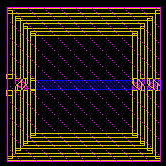
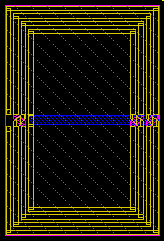
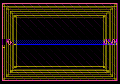

ldiff_stk561 xsize and ysize properties
these layouts show the effect of varying the xsize and ysize properites for an example ldiff_stk561
xsize = 100u ysize = 100u

xsize = 100u, ysize = 150u

xsize = 150u, ysize = 100u

xsize = 150u, ysize = 150u